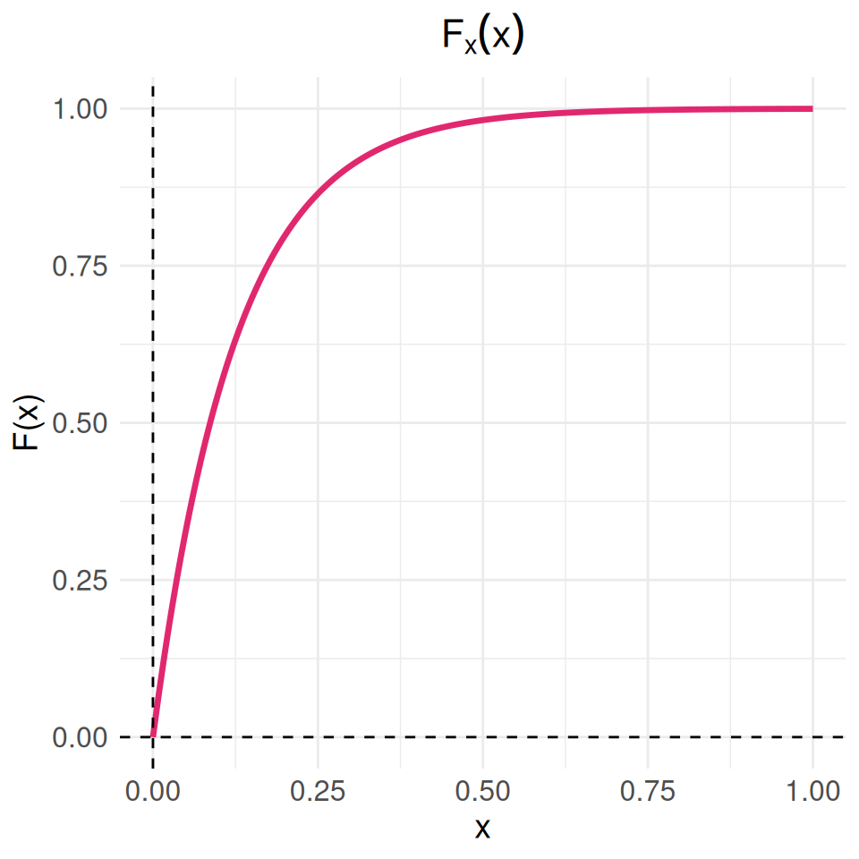
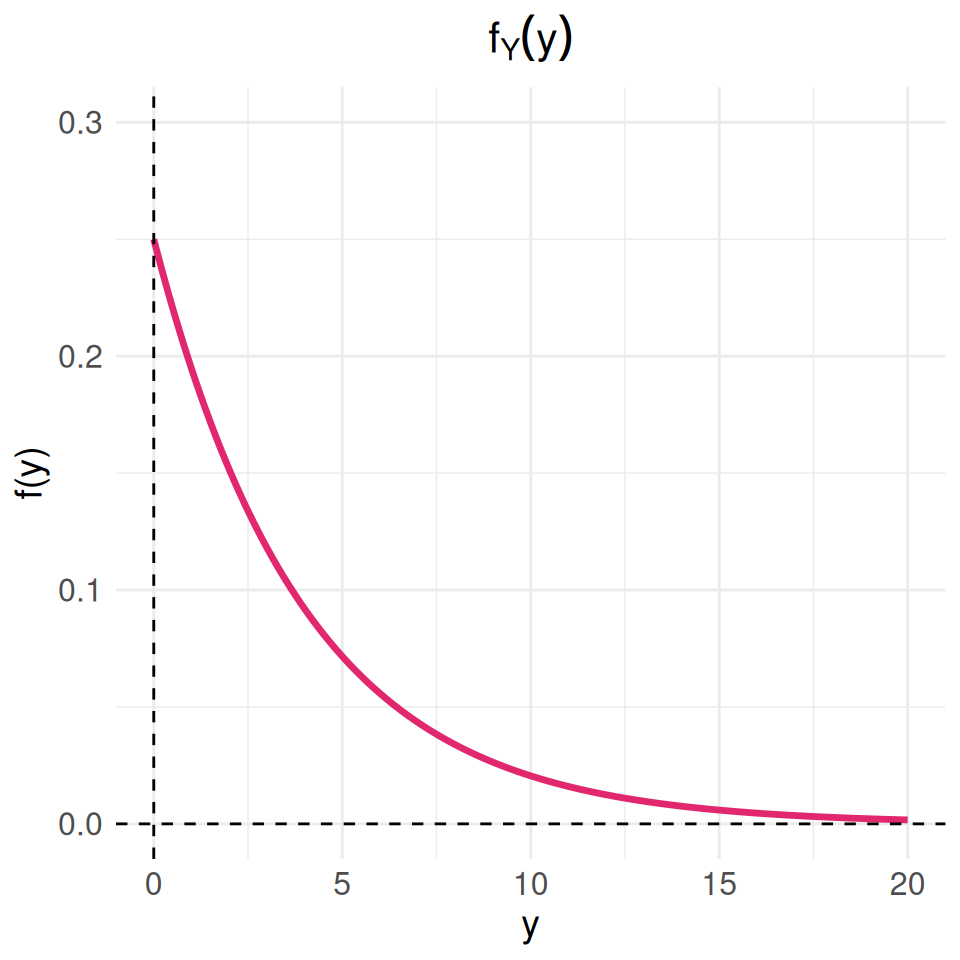
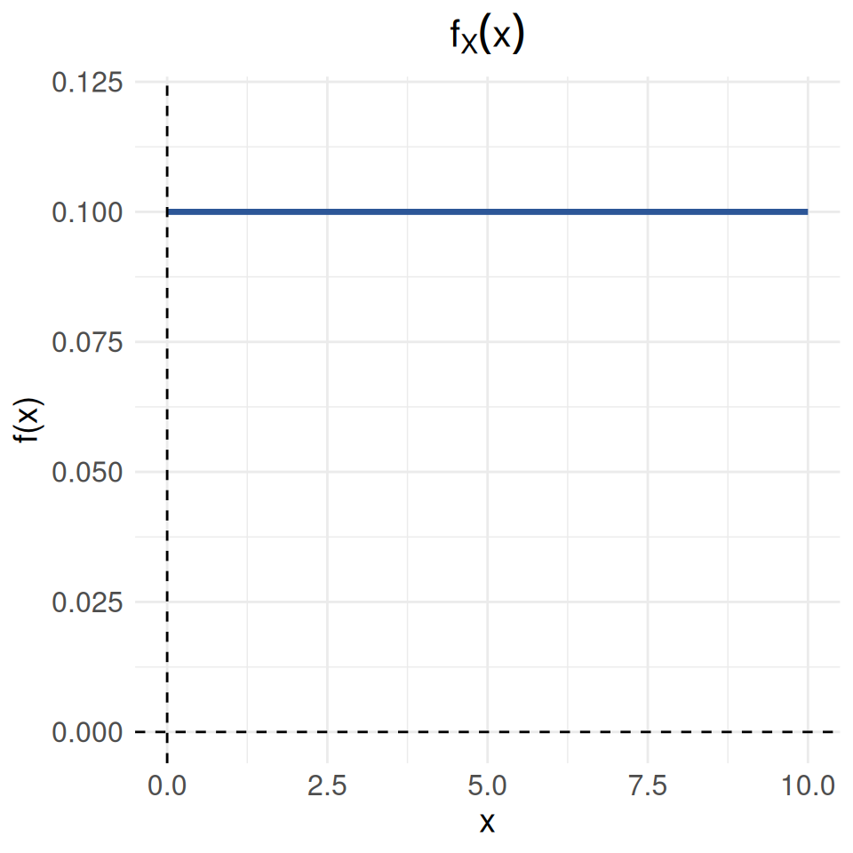
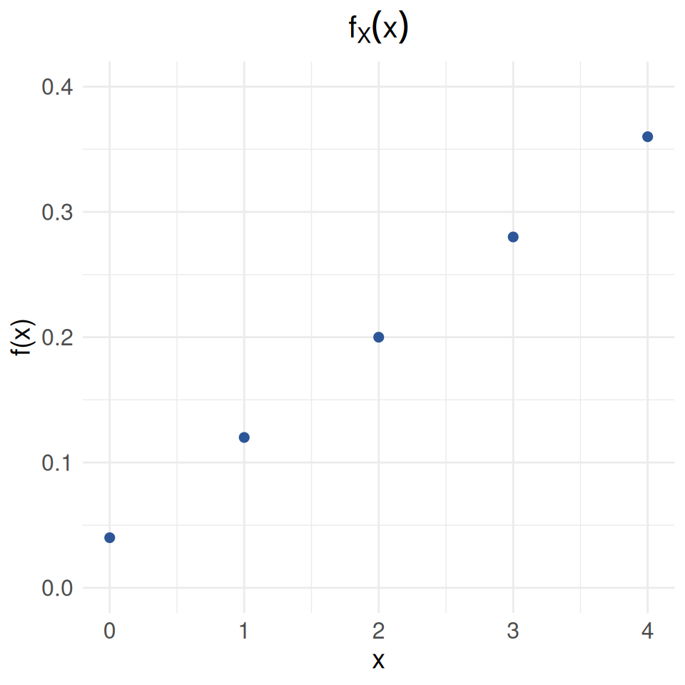

Clasifique las siguientes variables aleatorias como discretas o continuas:
El tiempo que pasa, en horas, para que un radar detecte entre conductores sucesivos a los que exceden los límites de velocidad es una variable aleatoria continua con una función de distribución acumulada:
\[F_{_{X}}(x) = \left \{ \begin{matrix} 0 & \mbox{ , } x \leq 0\\ 1-exp\{-8x \} & x \geq 0 \end{matrix}\right. \]
Calcule la probabilidad de que el tiempo que pase para que el radar detecte entre conductores sucesivos a los que exceden los límites de velocidad sea menor a 12 minutos
# Cargar ggplot2
library(ggplot2)
# Definir la función F(x)
Fx <- function(x) {
ifelse(x <= 0, 0, 1 - exp(-8 * x))
}
# Crear un rango de valores para x
x_values <- seq(0, 1, length.out = 500)
# Calcular los valores de F(x)
Fx_values <- Fx(x_values)
# Crear un dataframe con los valores
data <- data.frame(x = x_values, Fx = Fx_values)
# Graficar usando ggplot2
ggplot(data, aes(x = x, y = Fx)) +
geom_line(color = c3, size = 1.2) +
labs(x = "x", y = "F(x)", title = expression(F[x](x))) +
theme_minimal() +
xlim(0, 1) +
ylim(0, 1) +
theme(
plot.title = element_text(hjust = 0.5, size = 16),
axis.title = element_text(size = 14),
axis.text = element_text(size = 12)
) +
geom_hline(yintercept = 0, linetype = "dashed") +
geom_vline(xintercept = 0, linetype = "dashed")
Una variable aleatoria continua \(X\), que puede tomar valores entre \(x=2\) y \(x=5\), tiene una función de densidad data por \(f(x)=2(1*x)/27\).
Calcule: * \(P(X < 4)\) * \(P(3 \leq X < 4)\) * Represente la función \(f(x)\) gráficamente
Suponga que cierto tipo de pequeñas empresas de procesamiento de datos están tan especializadas que algunas tienen dificultades para obtener utilidades durante su primer año de operación. La función de densidad de probabilidad está dada por:
\[f_{_{Y}}(y) = \left \{ \begin{matrix} ky^4 (1-y)^3 & \mbox{ , } 0 \leq y \leq 1\\ 0 & \mbox{en otro caso } \end{matrix}\right. \]
Calcule la distribución de probabilidad par el número de discos compactos de jazz, de una colección que consta de 5 de jazz, 2 de música clásica y 3 de rock, al seleccionar de esta colección 4 de manera aleatoria. Explique sus resultados utilizando una fórmula.
De una caja que contiene 4 monedad de 10 centavos y 2 monedas de 5 centavos se seleccionan 3 monedas de manera aleatoria y sin reemplazo. calcule la distribución de probabilidad para el total \(T\) de las 3 monedas . Exprese la distribución de probabilidad de forma gráfica
Con base en las pruebas extensas, el fabricante de una lavadora determinó que el tiempo \(Y\) (en años) para que el electrodoméstico requiera una reparación mayor se obtiene mediante la siguiente función de densidad de probabilidad :
\[f_{_{Y}}(y) = \left \{ \begin{matrix} \dfrac{1}{4} exp\{-y/4\} & \mbox{ , } y \geq 0\\ 0 & \mbox{en otro caso } \end{matrix}\right. \]
Los críticos considerarían que la lavadora es una ganga si no hay una probabilidad de que requiera una reparación mayor antes del sexto año. ¿Se puede considerar la lavadora como una ganga?
¿Cuál es la probabilidad de que a lavadora requiera una reparación mayor durante el primer año?
Represente la función \(f(x)\) gráficamente
# Cargar ggplot2
library(ggplot2)
# Definir la función f_Y(y)
fy <- function(y) {
ifelse(y >= 0, (1 / 4) * exp(-y / 4), 0)
}
# Crear un rango de valores para y
y_values <- seq(0, 20, length.out = 500)
# Calcular los valores de f_Y(y)
fy_values <- fy(y_values)
# Crear un dataframe con los valores
data_fy <- data.frame(y = y_values, fy = fy_values)
# Graficar usando ggplot2
ggplot(data_fy, aes(x = y, y = fy)) +
geom_line(color = c3, size = 1.2) +
labs(x = "y", y = "f(y)", title = expression(f[Y](y))) +
theme_minimal() +
xlim(0, 20) +
ylim(0, 0.3) +
theme(
plot.title = element_text(hjust = 0.5, size = 16),
axis.title = element_text(size = 14),
axis.text = element_text(size = 12)
) +
geom_hline(yintercept = 0, linetype = "dashed") +
geom_vline(xintercept = 0, linetype = "dashed")
Sea el número de llamadas telefónicas que recibe un conmutador durante un intervalo de 5 minutos una variable aleatoria \(X\) con la siguiente función de distribución de probabilidad:
\[f(x)= \dfrac{exp\{-2\}\hspace{.2cm} 2^x}{x!}\hspace{.3cm} \mbox{ , para }\hspace{.3cm} x = 01,2,3,4,5.... \]
El congestionamiento de pasajeros es un problema de servicio en los aeropuertos, en los cuales se instalan trenes para reducir la congestión. cuando se usa el tren el tiempo \(X\), en minutos, que toma viajar desde la terminal principal hasta una explanada específica tiene la siguiente función de densidad:
\[f_{_{X}}(x) = \left \{ \begin{matrix} \dfrac{1}{10} & \mbox{ , } 0 \leq y \leq 10\\ 0 & \mbox{en otro caso } \end{matrix}\right. \]
# Cargar ggplot2
library(ggplot2)
# Definir la función f_X(x)
fx <- function(x) {
ifelse(x >= 0 & x <= 10, 1/10, 0)
}
# Crear un rango de valores para x
x_values <- seq(0, 10, length.out = 500)
# Calcular los valores de f_X(x)
fx_values <- fx(x_values)
# Crear un dataframe con los valores
data_fx <- data.frame(x = x_values, fx = fx_values)
# Graficar usando ggplot2
ggplot(data_fx, aes(x = x, y = fx)) +
geom_line(color = c6, size = 1.2) +
labs(x = "x", y = "f(x)", title = expression(f[X](x))) +
theme_minimal() +
xlim(0, 10) +
ylim(0, 0.12) +
theme(
plot.title = element_text(hjust = 0.5, size = 16),
axis.title = element_text(size = 14),
axis.text = element_text(size = 12)
) +
geom_hline(yintercept = 0, linetype = "dashed") +
geom_vline(xintercept = 0, linetype = "dashed")
Problemas tomado de walpole (2006)
10. Suponga que \(f(x)=exp\{-x\}\), para \(0 \leq x \leq 1\), \(0\) para cualquier otro caso.
Determine :
Para una variable aleatoria con función de densidad : \(f(x)= x/8\) para \(3 < X < 5\).
Determine :
Suponga que \(X\) tiene una función de distribución acumulada :
\[F_{_{X}}(x) = \left \{ \begin{matrix} 0 & \mbox{ , } x \leq 0\\ 2x & \mbox{, } x < 0 < x 5 \\ 1 & \mbox{ , } 5 \leq 5 \end{matrix}\right. \]
Determine:
Para la variable aleatoria que tiene la siguiente función de distribución de probabilidad :
| \(x\) | \(-2\) | \(-1\) | \(0\) | \(1\) | \(2\) |
|---|---|---|---|---|---|
| \(f(x)\) | \(1/8\) | \(2/8\) | \(2/8\) | \(2/8\) | \(1/8\) |
Determine:
Para una variable con función de distribución de probabilidad :
\[f_{_{X}}(x) = \left \{ \begin{matrix} \dfrac{2x + 1}{25} & \mbox{ , } x=0, 1, 2, 3, 4\\ 0 & \mbox{en otro caso } \end{matrix}\right. \]
Determine:
# Cargar ggplot2
library(ggplot2)
# Definir la función f_X(x)
fx <- function(x) {
ifelse(x %in% 0:4, (2*x + 1)/25, 0)
}
# Crear un rango de valores para x
x_values <- 0:4
# Calcular los valores de f_X(x)
fx_values <- fx(x_values)
# Crear un dataframe con los valores
data_fx <- data.frame(x = x_values, fx = fx_values)
# Graficar usando ggplot2 en un diagrama de puntos
ggplot(data_fx, aes(x = x, y = fx)) +
geom_point(color = c6, size = 2) +
#geom_line(color = "blue", linetype = "dashed") +
labs(x = "x", y = "f(x)", title = expression(f[X](x))) +
theme_minimal() +
ylim(0, 0.4) +
theme(
plot.title = element_text(hjust = 0.5, size = 16),
axis.title = element_text(size = 14),
axis.text = element_text(size = 12)
)
Para una variable aleatoria con función de distribución de probabilidad: \(f(x)= (3/4)(1/4)^{x}\), para \(x=0, 1, 2, 3,...\)
Sponga que \(X\) tiene una función de probabilidad acumulada:
\[F_{_{X}}(x) = \left \{ \begin{matrix} 0 & \mbox{ , } x \leq 0\\ 0.2 x & \mbox{, } 0 < x < 5 \\ 1 & \mbox{ , } x \geq 5 \end{matrix}\right. \]
Determine: * \(P(X < 2.8)\)
Fx=function(x){0.2*x }
Fx(2.8)[1] 0.56El tiempo de reparación (en minutos) de una máquina fotocopiadora tiene una función de densidad:
\[f_{_{X}}(x) = \left \{ \begin{matrix} \dfrac{1}{22} exp\{-x/22\} & \mbox{ , } x > 0\\ 0 & \mbox{en otro caso } \end{matrix}\right. \]
Cuando el profesor de Probabilidad y Estadística se preparaba para imprimir el cuestionario del segundo examen parcial, fue enterado por la secretaria del departamento que la máquina fotocopiadora se había averiado y que el técnico había acabado de llegar en ese instante y empezado a repararla. El profesor debe contar con por lo menos 10 minutos extras - tiempo de fotocopiado de 35 exámenes, organizar sus respectivas hojas de respuestas, sumado tiempo de su desplazamiento hasta el salón de clase, arreglo de las mesas y entrega de los cuestionarios a los estudiantes. Al mirar el reloj, el profesor observa que faltan 20 minutos para la hora en que debe empezar el examen y decide esperar a que el técnico repare la fotocopiadora. ¿Es acertada o no la decisión que tomó el profesor? Justifique su respuesta.
18. Suponga que \(f(x)=exp\{-x\}\), para \(0 \leq x \leq 1\), \(0\) para cualquier otro caso.
Determine :
Para una variable aleatoria con función de densidad : \(f(x)= x/8\) para \(3 < X < 5\).
Determine :
Suponga que \(X\) tiene una función de distribución acumulada:
\[F_{_{X}}(x) = \left \{ \begin{matrix} 0 & \mbox{ , } x \leq 0\\ \dfrac{1}{5}x & \mbox{, } 0 \leq x \leq 5 \\ 1 & \mbox{ , } x \geq 5 \end{matrix}\right. \]
Determine :
Para la variable aleatoria que tiene la siguiente función de distribución de probabilidad :
| \(x\) | \(-2\) | \(-1\) | \(0\) | \(1\) | \(2\) |
|---|---|---|---|---|---|
| \(f(x)\) | \(1/8\) | \(2/8\) | \(2/8\) | \(2/8\) | \(1/8\) |
Determine :
Para una variable con función de distribución de probabilidad :
\[f_{_{X}}(x) = \left \{ \begin{matrix} \dfrac{2x * 1}{25} & \mbox{ , } x=0, 1, 2, 3, 4\\ 0 & \mbox{en otro caso } \end{matrix}\right. \]
Determine :
Para una variable aleatoria con función de distribución de probabilidad: \(f(x)= (3/4)(1/4)^{x}\), para $x=0, 1, 2, 3,… $
Determine :
Problemas tomados de Mongomery(2003)
Una de las preocupaciones que tienen los padres hoy en dia está relacionada con el tiempo que pasan sus hijos usando celular. Un estudio determinó que el número de llamadas que un joven realiza durante un dia es una variable aleatoria (\(X\)) con función de distribución :
\[f_{_{X}}(x) = \left \{ \begin{matrix} \dfrac{8^{x}\hspace{.2cm} exp\{-8\}}{x!} & \mbox{ , para } \hspace{.3cm} x = 0,1,2,3,4,5,.....\\ 0 & \mbox{en otro caso } \end{matrix}\right. \]
El estudio afirma también que los jóvenes en promedio reciben al rededor de 12 llamadas por día, valor que es considerado muy alto, debido a que a esa edad por lo regular no se tienen actividades económicas que lo ameriten. También mencionan que debido a que se ha logrado identificar la función de distribución de probabilidad es fácil establecer que se trata de una variable con un comportamiento homogéneo. ¿Está de acuerdo con la información suministrada en el artículo? . Justifique su respuesta.